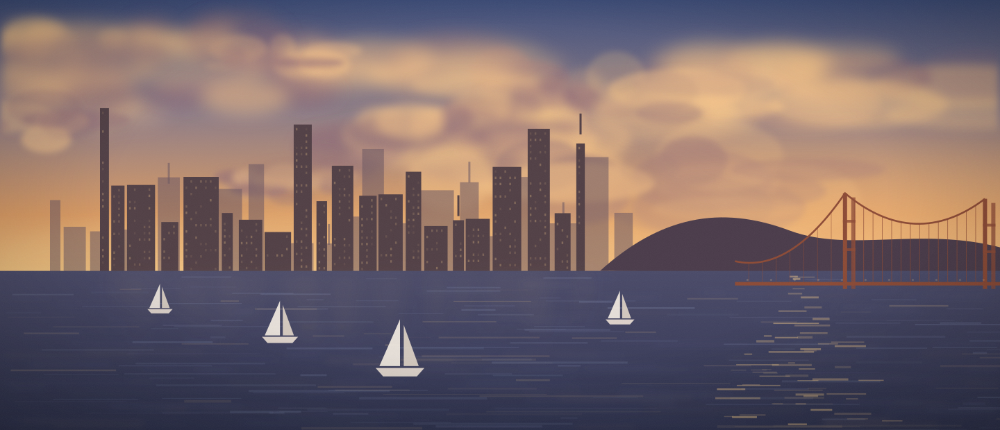
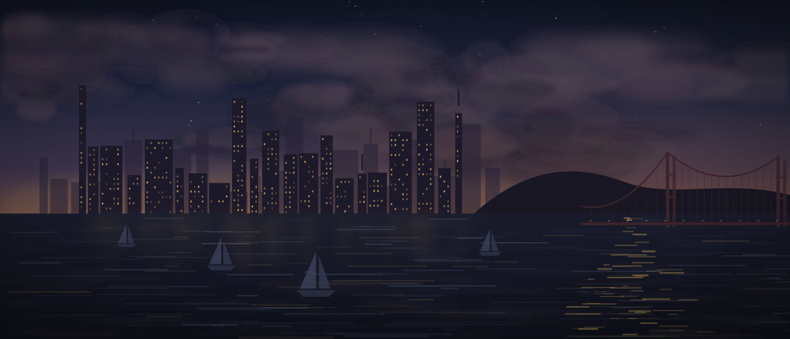

The surface for judgment
i.e. what a person should actually be looking at to think, decide and review, once the first draft arrives already written.
Long Horizon Research is a small lab in San Francisco. We study how people and agents work together, and we build the instruments that work is missing.
Most of the drafting is moving to machines. What a person does with it is still an open question, and we are studying three parts of it:
i.e. what a person should actually be looking at to think, decide and review, once the first draft arrives already written.
i.e. whether a model can learn your taste from the collaboration itself. Every edit, comment, acceptance and reversal is a signal, which makes real work a training set.
i.e. how several people and several agents write in the same place at once, and still leave a record of who changed what, and when.
Each question we take seriously eventually asks for a tool that does not exist yet. We build it, then we work in it.


We are in San Francisco, hiring researchers and engineers in personalization, reinforcement learning, and interfaces.
Get in touchA short primer on what we study, what we build, and who we are looking for.
Human-agent interaction. Specifically: the surface a person needs in order to think, decide and review when machines do most of the drafting; whether a model can learn a person's judgment from the collaboration itself; and how several people and several agents can share one document without losing track of who did what.
Because a field moves at the speed of what it can observe. The agents arrived before anything that lets a person see, steer and audit their work at close range. We build instruments to make that work legible, and every one of them is also an experiment.
Our first instrument: a shared workspace where people and agents write together, every edit attributed and every change reviewable. It is the first of a series, and it is live at sundialhub.com.
From the work, not from a questionnaire. When a person edits a line, comments on a paragraph, accepts one suggestion and reverses another, each of those is a small, dated statement of taste. We are studying whether that record is enough to personalize a model, and to train on real work rather than on a proxy for it.
Researchers and engineers working on personalization, reinforcement learning, and interfaces. We are small and in San Francisco. Write to team@longhorizonresearch.com and tell us what you have built and what you would like to find out.